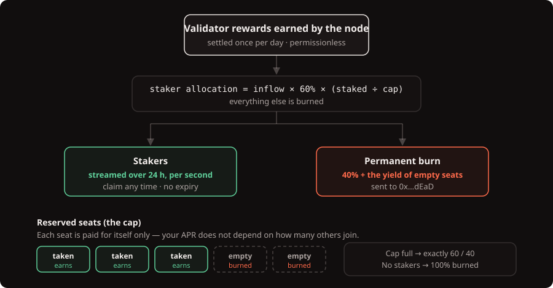
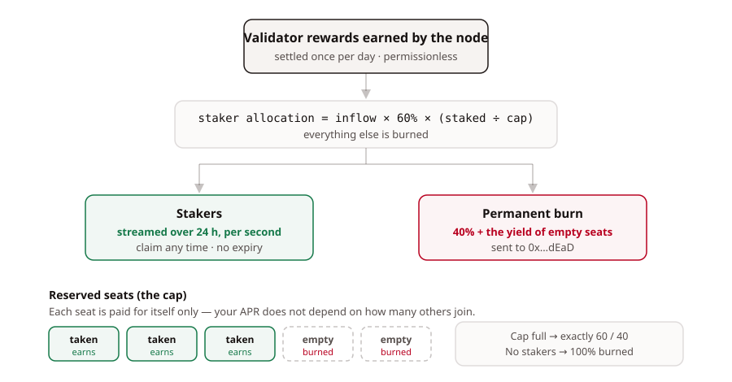

How It Works


Daily Settlement
The vault settles once per day. Settlement is permissionless — anyone can call settle; no privileged operator is required to keep the vault running.
At settlement, the rewards that flowed in are divided:
staker allocation = inflow × 60% × (staked ÷ cap)
everything else = burned permanently to 0x…dEaD
The rewards come from what the Union validator node actually earned. Nothing is newly minted for stakers.
The Reserved-Seat Model
Think of the cap as a room of seats. Staking takes a seat.
- You are paid for your own seat only. Your share is computed against the cap, not against how many other people staked, so your APR does not drop when others join and does not rise when they leave.
- Empty seats do not pay anyone. The yield attached to unfilled capacity is burned in full.
- At a full cap the split is exactly 60 / 40. The emptier the vault, the larger the burned portion — with no stakers at all, 100% is burned.
| Vault state | Stakers receive | Burned |
|---|---|---|
| Cap fully staked | 60% of inflow | 40% of inflow |
| Partially staked | 60% × (staked ÷ cap) | everything else |
| No stakers | — | 100% of inflow |
Rewards Stream by the Second
The daily allocation is not paid out as a lump sum. It is streamed over the following 24 hours, accruing every second.
This is what makes reward sniping impossible: depositing immediately before a settlement cannot capture a day's worth of rewards, because rewards are earned only for the time your stake is actually in the vault.
Claiming has no expiry. Accrued rewards stay claimable until you take them.
Unstaking
Unstaking takes two transactions, with a cooldown between them:
- Request unstake — your exit is recorded on-chain. A 7-day cooldown then runs before the request matures.
- Claim matured — you receive 100% of your principal.
Principal and rewards are held on separate ledgers. Even if reward distribution stops entirely, your full principal remains withdrawable.
Vault Accounting
| Aspect | Detail |
|---|---|
| Vault standard | ERC-4626 |
| Redemption | ERC-7540-style asynchronous redemption (request, then claim after maturity) |
| Share ratio | Permanently fixed at 1 XP = 1,000 shares |
| Purpose of the fixed ratio | Blocks share-price inflation attacks — the ratio can never be manipulated |
| What shares are | An internal accounting unit, not a floating-price receipt token |
Because the ratio never moves, your position is always readable as a plain XP amount.
Upgradeability and Governance
- Contract logic is not upgradeable. There is no proxy — the deployed logic is the final logic.
- Only operational parameters can change, and only through a 48-hour on-chain timelock. Every parameter change is visible on-chain for 48 hours before it can take effect.
- The cap is expanded in stages through this same timelock, from the guarded-launch value toward the target.
See Also
- User Guide — doing this in the interface
- Fees & Risks
- Contracts & Verification — verify the parameters above yourself